SĂNĂTATEA PUBLICĂ
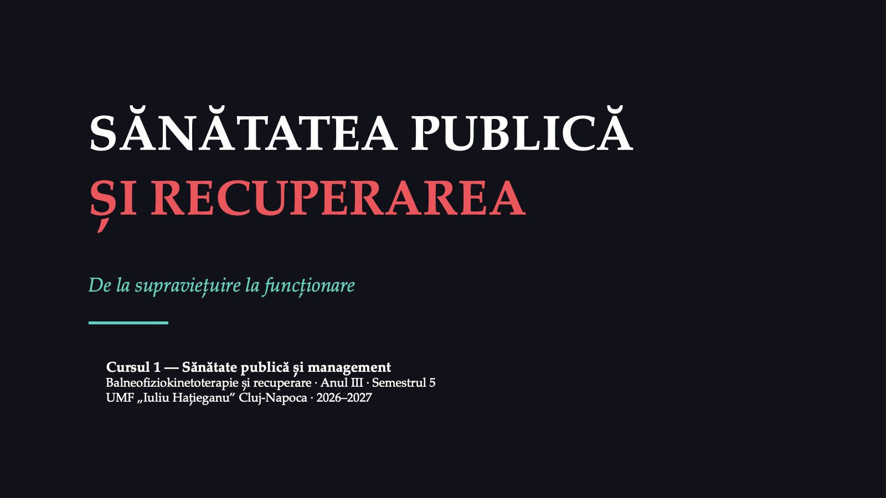
1 / 60Primul curs al disciplinei leagă recuperarea de sănătatea publică: cum se măsoară starea de sănătate a unei populații și cât de mare este nevoia ei de recuperare.
Ce veți ști la finalul acestui curs?
![Ce veți ști la finalul acestui curs? Obiectivele cursului Explică definiția și funcțiile sănătății publice Descrie nivelurile de prevenție și modelul CIF Calculează și interpretează prevalența, incidența, YLD, DALY Interpretează nevoia de recuperare și citează exact o sursă Agenda cursului A Deschidere: afecțiunea-ancoră ~10 min B Funcționare, sănătate publică, prevenție ~20 min C CIF și recuperarea ca strategie ~20 min D Indicatori și nevoia de recuperare ~25 min E Surse, demonstrație, verificare ~25 min Obiectivele complete și ideile-cheie se află la începutul notelor de curs · Bibliografia obligatorie: fișa disciplinei, 8.1; suportul de curs este primul titlu Sănătate publică și management — C01 | Balneofiziokinetoterapie și recuperare, anul III | UMF „Iuliu Hațieganu” Cluj-Napoca 2 / 60](diapozitive/C01/002.jpg) 2 / 60
2 / 60Cursul are cinci părți. Începe cu alegerea afecțiunii-ancoră, continuă cu trecerea de la supraviețuire la funcționare, cu sănătatea publică și prevenția, apoi cu modelul CIF, cu indicatorii și cu nevoia de recuperare, și se încheie cu sursele de date, o demonstrație pe date reale și o verificare prin vot.
Idei-cheie ale cursului
![Sănătate publică și management — C01 | Balneofiziokinetoterapie și recuperare, anul III | UMF „Iuliu Hațieganu” Cluj-Napoca 3 / 60 Idei-cheie ale cursului Sănătatea publică: previne boala, prelungește viața și promovează sănătatea prin eforturile organizate ale societății; recuperarea îi aparține Prevenția terțiară: cuprinde managementul bolii și recuperarea; OMS dă ca exemplu educația pacientului și fizioterapia Modelul CIF: descrie sănătatea prin funcționare: corp, activitate, participare, în interacțiune cu mediul și cu factorii personali Povara invizibilă: anii trăiți cu dizabilitate văd afecțiunile care nu ucid; lombalgia este prima lor cauză în lume Număr și rată: îmbătrânirea crește numărul cazurilor chiar când riscul la aceeași vârstă scade](diapozitive/C01/003.jpg) 3 / 60
3 / 60Cele cinci idei rezumă cursul și sunt reluate la recapitulare.
Firul roșu: afecțiunea-ancoră
![Firul roșu: afecțiunea-ancoră Lombalgia cronică Frecventă, rareori mortală; limitează munca, mișcarea și viața de zi cu zi. Prima cauză a nevoii de recuperare a României, după persoane și după anii trăiți cu dizabilitate. Accidentul vascular cerebral Eveniment acut; supraviețuitorul poate rămâne cu deficiențe motorii, de limbaj sau cognitive. Mai rar, dar cu o povară mare. Fractura de șold la vârstnic Leziune gravă produsă de căderi; vârstnicii care rămân cu dizabilitate după o cădere au un risc mare de îngrijire pe termen lung. Fiecare student alege o afecțiune pe care o urmărește în toate cele patru fișe de lucru (fișa disciplinei, 2026–2027) Sănătate publică și management — C01 | Balneofiziokinetoterapie și recuperare, anul III | UMF „Iuliu Hațieganu” Cluj-Napoca 4 / 60](diapozitive/C01/004.jpg) 4 / 60
4 / 60Cele trei afecțiuni sunt trei drumuri diferite spre recuperare: o afecțiune cronică foarte frecventă, un eveniment acut cu urmări de lungă durată și o leziune a vârstnicului legată de căderi. Afecțiunea aleasă azi revine în toate fișele de lucru.
Ce afecțiune-ancoră alegeți?
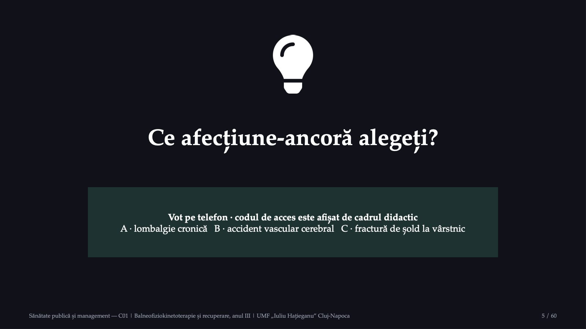
5 / 60Fiecare student își alege afecțiunea-ancoră prin vot. După vot, distribuția alegerilor se vede pe ecran, iar câțiva studenți formulează o întrebare la care vor să afle răspunsul până la ultima întâlnire: câți oameni trăiesc cu afecțiunea, cine plătește recuperarea, cum se măsoară dacă recuperarea a reușit.
Fișele de lucru, portofoliul și evaluarea
![Fișele de lucru, portofoliul și evaluarea FIȘELE DE LUCRU Câte o fișă la fiecare lucrare practică Trimisă prin e-mail la final sau în cel mult 48 de ore Fiecare valoare: instituție, an, măsură, cod indicator EVALUAREA FINALĂ Test grilă: 20 de întrebări, 30 de minute, la a patra lucrare practică Test 60% · portofoliu 40% · activitatea pe parcurs 0% Portofoliul: media celor mai bune trei fișe din patru PROMOVAREA Nota minimă 5 la test și la portofoliu Minimum 50% din punctajul fiecărei componente Trei fișe din patru; prezența, conduita, fără fraude Nota finală = 60% test grilă + 40% portofoliu, rotunjită conform regulamentului UMFIH Sursa: fișa disciplinei, secțiunile 10.5–10.9 Sănătate publică și management — C01 | Balneofiziokinetoterapie și recuperare, anul III | UMF „Iuliu Hațieganu” Cluj-Napoca 6 / 60](diapozitive/C01/006.jpg) 6 / 60
6 / 60Fișele de lucru formează portofoliul. Fiecare valoare numerică dintr-o fișă se scrie împreună cu sursa exactă: instituția, anul, măsura și codul indicatorului.
De la supraviețuire la funcționare
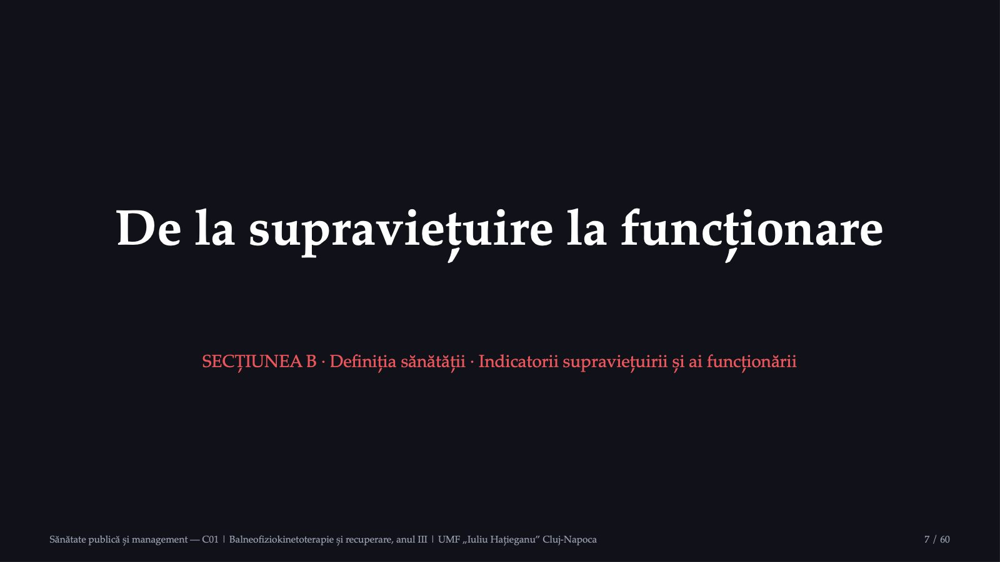
7 / 60Indicatorii clasici măsoară cât trăiesc oamenii; recuperarea privește cum trăiesc.
Cât trăim și cum trăim
![Cât trăim și cum trăim Indicatorii supraviețuirii Mortalitatea Speranța de viață Întrebarea: câți oameni mor și când? Tradiția statisticii de sănătate Indicatorii funcționării Anii trăiți fără limitări de activitate Anii trăiți cu dizabilitate Întrebarea: cum trăiesc anii câștigați? Obiectul recuperării Definiție: Constituția OMS (adoptată în 1946, în vigoare din 1948): sănătatea este „o stare de complet bine fizic, mintal și social, și nu doar absența bolii sau a infirmității”. Stucki și colaboratorii (2018): tendințele sugerează că indicatorii-cheie vor include, pe lângă mortalitate și morbiditate, funcționarea; recuperarea va deveni strategia-cheie a secolului XXI. Sănătate publică și management — C01 | Balneofiziokinetoterapie și recuperare, anul III | UMF „Iuliu Hațieganu” Cluj-Napoca 8 / 60](diapozitive/C01/008.jpg) 8 / 60
8 / 60Definiția OMS privește persoana întreagă, nu diagnosticul. Pe măsură ce oamenii trăiesc mai mult, contează câți dintre anii câștigați sunt trăiți fără limitări. Declarația de la Alma-Ata din 1978 număra deja recuperarea printre serviciile asistenței medicale primare.
Ghiciți cifra!
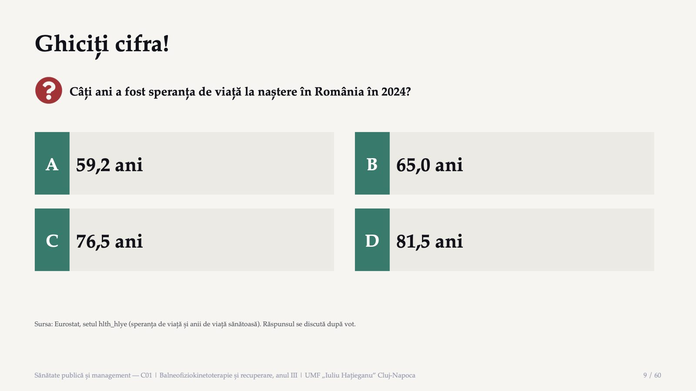
9 / 60Votați înainte de a vedea răspunsul. Variantele sunt valori reale din același tabel Eurostat; după vot vedem ce reprezintă fiecare.
Răspunsul: patru valori, trei indicatori
![Sănătate publică și management — C01 | Balneofiziokinetoterapie și recuperare, anul III | UMF „Iuliu Hațieganu” Cluj-Napoca 10 / 60 Răspunsul: patru valori, trei indicatori 76,5 ani speranța de viață la naștere, România, 2024 81,5 ani speranța de viață la naștere, UE, 2024 65,0 ani anii de viață sănătoasă la naștere, România, 2024 (b, e) 59,2 ani anii de viață sănătoasă la naștere, România, 2023 (e), înaintea rupturii de serie Sursa: Eurostat, hlth_hlye, extras la 27.09.2026; b = ruptură de serie, e = valoare estimată](diapozitive/C01/010.jpg) 10 / 60
10 / 60Speranța de viață la naștere a fost de 76,5 ani în România și de 81,5 ani în UE. Celelalte două valori sunt anii de viață sănătoasă, un alt indicator, la care revenim în secțiunea despre indicatori: ei nu se compară între 2023 și 2024, din cauza rupturii de serie.
Sănătatea publică: definiție și funcții
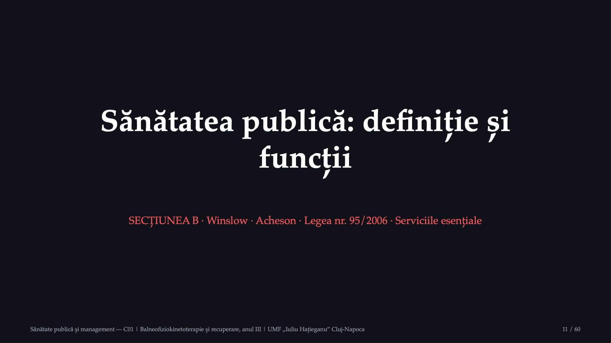
11 / 60Definițiile clasice și funcțiile sănătății publice, apoi legislația românească.
De la Winslow la legea română: definițiile sănătății publice
![De la Winslow la legea română: definițiile sănătății publice 1920 Winslow, Science Știința și arta de a preveni boala, de a prelungi viața și de a promova sănătatea fizică și eficiența prin eforturile organizate ale comunității 1946 Constituția OMS Sănătatea: stare de complet bine fizic, mintal și social, nu doar absența bolii 1988 Raportul Acheson Știința și arta de a preveni boala, de a prelungi viața și de a promova sănătatea prin eforturile organizate ale societății România Legea nr. 95/2006 Asistența de sănătate publică: efortul organizat al societății pentru protejarea și promovarea sănătății populației Surse: Winslow, Science, 1920, p. 30; Constituția OMS, 1946; raportul Acheson, 1988, paragraful 1.3; Legea nr. 95/2006, art. 2 alin. (1) Sănătate publică și management — C01 | Balneofiziokinetoterapie și recuperare, anul III | UMF „Iuliu Hațieganu” Cluj-Napoca 12 / 60](diapozitive/C01/012.jpg) 12 / 60
12 / 60Winslow enumeră cinci direcții ale efortului organizat al comunității. Raportul Acheson păstrează ideea într-o definiție de lucru mai scurtă, despre sănătate în general și despre societate. Legea nr. 95/2006 numește efortul organizat asistență de sănătate publică, iar sănătatea publică însăși este starea de sănătate a populației în raport cu determinanții ei.
Cele cinci direcții ale lui Winslow
![Cele cinci direcții ale lui Winslow Controlul infecțiilor din comunitate Educația pentru igienă a fiecărei persoane Serviciile medicale diagnostic precoce, tratament preventiv Nivelul de trai mecanismul social al sănătății Salubrizarea mediului mediul de viață Numai una dintre cele cinci direcții privește serviciile medicale; ultima este o condiție socială (Winslow, 1920). Sănătate publică și management — C01 | Balneofiziokinetoterapie și recuperare, anul III | UMF „Iuliu Hațieganu” Cluj-Napoca 13 / 60](diapozitive/C01/013.jpg) 13 / 60
13 / 60Sănătatea publică este o acțiune organizată a întregii comunități, care depășește serviciile medicale. Recuperarea ține de a patra direcție, organizarea serviciilor, dar și de celelalte: mediul, educația și nivelul de trai influențează funcționarea.
Cele zece servicii esențiale (versiunea 2020)
![Cele zece servicii esențiale (versiunea 2020) CUNOAȘTERE ȘI COMUNICARE 1. Evaluarea și monitorizarea stării de sănătate 2. Investigarea problemelor și a pericolelor 3. Comunicarea: informare și educare POLITICI ȘI REGLEMENTARE 4. Mobilizarea comunităților și a parteneriatelor 5. Politici, planuri și legi pentru sănătate 6. Acțiuni legale și de reglementare ACCES, OAMENI, CALITATE 7. Acces echitabil la îngrijiri 8. Forță de muncă diversă și calificată 9. Evaluare, cercetare, îmbunătățirea calității 10. Infrastructură organizațională solidă pentru sănătatea publică Sursa: 10 Essential Public Health Services, versiunea revizuită din 2020 (de Beaumont Foundation, PHAB). Gruparea pe coloane este didactică. Sănătate publică și management — C01 | Balneofiziokinetoterapie și recuperare, anul III | UMF „Iuliu Hațieganu” Cluj-Napoca 14 / 60](diapozitive/C01/014.jpg) 14 / 60
14 / 60Cadrul din 1994 este organizat în jurul celor trei funcții de bază: evaluarea, dezvoltarea politicilor și asigurarea. Versiunea revizuită din 2020 pune echitatea în centru. Pentru recuperare contează direct primul serviciu, măsurarea nevoii, al șaptelea, accesul echitabil, și al nouălea, calitatea.
Sănătatea publică în legislația română
![Sănătatea publică în legislația română Legea nr. 95/2006, art. 5 Funcțiile asistenței de sănătate publică, între care: lit. b) monitorizarea și analiza stării de sănătate lit. k) informarea, educarea și comunicarea lit. m) evaluarea calității, eficacității, eficienței și accesului Legea nr. 229/2016, art. 17 Domeniile principale ale fizioterapeutului, între care: lit. c) sănătate publică sau comunitară promovarea sănătății și a activităților de fizioterapie minimalizarea riscurilor legate de mișcare și funcție Perspectiva: Aceeași lombalgie cronică: fizioterapeutul întreabă ce program îi redă funcția acestui pacient; perspectiva de sănătate publică întreabă câte persoane au nevoie de recuperare și câte o primesc. Sănătate publică și management — C01 | Balneofiziokinetoterapie și recuperare, anul III | UMF „Iuliu Hațieganu” Cluj-Napoca 15 / 60](diapozitive/C01/015.jpg) 15 / 60
15 / 60Legea profesiei așază sănătatea publică printre domeniile de practică ale fizioterapeutului: promovarea sănătății la nivel de individ și de grup și minimalizarea riscurilor care decurg din afectarea capacității de mișcare și a funcției.
Pacientul și populația: două perspective
![Sănătate publică și management — C01 | Balneofiziokinetoterapie și recuperare, anul III | UMF „Iuliu Hațieganu” Cluj-Napoca 16 / 60 Pacientul și populația: două perspective Criteriul · Recuperarea pacientului individual · Perspectiva de sănătate publică Obiectul · persoana cu lombalgie cronică · toate persoanele cu lombalgie și cele expuse riscului Întrebarea · ce program îi redă acestei persoane funcția? · câte persoane au nevoie de recuperare și câte o primesc? Indicatorii · durerea, mobilitatea, activitățile zilnice, revenirea la muncă · prevalența, anii trăiți cu dizabilitate, acoperirea, timpii de așteptare Decizia · planul fizioterapeutic, stabilit împreună cu pacientul · organizarea, finanțarea și distribuția serviciilor Sinteza secțiunii 1.3 a notelor de curs; tabelul nu conține date.](diapozitive/C01/016.jpg) 16 / 60
16 / 60Cele două perspective nu se exclud: datele populaționale arată unde și pentru cine trebuie organizate serviciile, iar rezultatele pacienților, adunate și analizate, devin date despre calitatea serviciilor.
Nivelurile de prevenție și locul recuperării
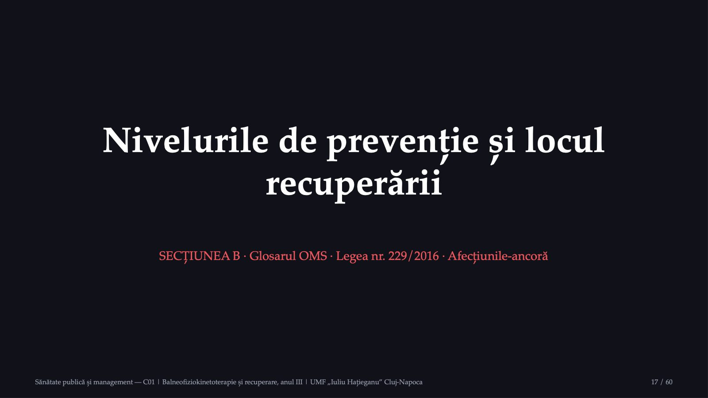
17 / 60Recuperarea nu vine după prevenție: este o formă de prevenție, aplicată când boala există deja.
Trei niveluri de prevenție (glosarul OMS, 2021)
![Sănătate publică și management — C01 | Balneofiziokinetoterapie și recuperare, anul III | UMF „Iuliu Hațieganu” Cluj-Napoca 18 / 60 Trei niveluri de prevenție (glosarul OMS, 2021) PRIMARĂ Previne apariția inițială a unei tulburări, prin scăderea factorilor de risc comuni: fumatul, alcoolul, obezitatea, hipertensiunea; include condițiile de mediu, economice și sociale. SECUNDARĂ Depistează precoce o boală deja existentă, pentru a-i opri sau a-i întârzia evoluția și efectele: screening, controale medicale periodice. TERȚIARĂ Managementul bolii și recuperarea, pentru a evita deteriorarea și complicațiile unei boli deja instalate, „de exemplu prin educația pacientului și fizioterapie”. Glosarul OMS din 1998: prevenția secundară și terțiară opresc sau încetinesc boala existentă, de exemplu printr-o recuperare eficace. Surse: OMS, Health Promotion Glossary of Terms, 2021; OMS, Health Promotion Glossary, 1998](diapozitive/C01/018.jpg) 18 / 60
18 / 60În ambele glosare ale OMS, recuperarea aparține prevenției: ea previne deteriorarea, complicațiile și dizabilitatea unei boli deja instalate.
Prevenția pe cele trei afecțiuni-ancoră
![Sănătate publică și management — C01 | Balneofiziokinetoterapie și recuperare, anul III | UMF „Iuliu Hațieganu” Cluj-Napoca 19 / 60 Prevenția pe cele trei afecțiuni-ancoră Nivelul · Lombalgia cronică · Accidentul vascular cerebral · Fractura de șold la vârstnic Primar · activitate fizică regulată, condiții de muncă ergonomice · controlul tensiunii arteriale, renunțarea la fumat · prevenirea căderilor: exerciții de echilibru, locuință fără obstacole Secundar · recunoașterea timpurie a durerii care persistă, evaluarea factorilor care o întrețin · evaluarea și tratarea promptă a atacului ischemic tranzitoriu, care poate anunța un accident vascular constituit · depistarea și tratarea osteoporozei la persoanele cu risc Terțiar · program de exerciții și educație pentru autogestionarea durerii · recuperarea motorie, a limbajului și a activităților zilnice · mobilizarea precoce după intervenție și recuperarea mersului Tipuri de intervenții, alese pentru a ilustra definițiile OMS; tabelul nu conține date și nu formulează recomandări clinice.](diapozitive/C01/019.jpg) 19 / 60
19 / 60Tabelul arată tipuri de intervenții, nu recomandări clinice. Pe fiecare coloană, fizioterapeutul lucrează cel mai des pe rândul terțiar, dar poate contribui și la celelalte două, de exemplu la programele de exerciții de echilibru pentru prevenirea căderilor.
Recuperarea ca prevenție: legea profesiei și OMS
![Recuperarea ca prevenție: legea profesiei și OMS Legea nr. 229/2016 Art. 2: programe de recuperare care îmbunătățesc sau restabilesc funcțiile motorii … și „tratează ori previn problemele fizice” Art. 13 lit. c): asistență terapeutică și profilactică … pentru prevenirea limitărilor de activitate și a restricțiilor de participare OMS Recuperarea: parte esențială a acoperirii universale … alături de promovare, prevenție, tratament, paliație Începe, adesea, imediat ce problema e identificată Exerciții după AVC; locuința adaptată contra căderilor Fracturile: autorii analizei GBD 2019 a fracturilor consideră că prevenirea traumatismelor și accesul vârstnicilor la screeningul și tratamentul osteoporozei ar trebui să reducă povara totală. Sănătate publică și management — C01 | Balneofiziokinetoterapie și recuperare, anul III | UMF „Iuliu Hațieganu” Cluj-Napoca 20 / 60](diapozitive/C01/020.jpg) 20 / 60
20 / 60Textul legii folosește chiar vocabularul modelului CIF: limitări de activitate și restricții de participare. OMS cere ca recuperarea să înceapă, în multe cazuri, imediat ce problema de sănătate este identificată și să continue în paralel cu celelalte intervenții.
Modelul biopsihosocial al funcționării: CIF
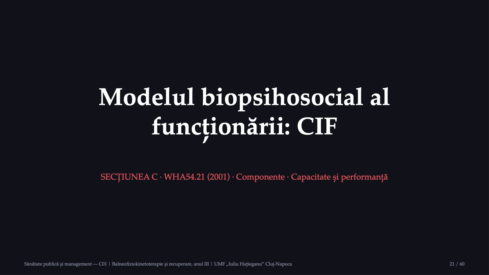
21 / 60Clasificarea bolilor întreabă ce boală are persoana; CIF întreabă ce poate face și ce face efectiv.
CIF: funcționarea în interacțiune cu contextul
![Sănătate publică și management — C01 | Balneofiziokinetoterapie și recuperare, anul III | UMF „Iuliu Hațieganu” Cluj-Napoca 22 / 60 CIF: funcționarea în interacțiune cu contextul Problema de sănătate (tulburare sau boală) Funcțiile și structurile corpului problema: deficiențe Activitatea problema: limitări de activitate Participarea problema: restricții de participare Factorii de mediu externi: fizic, social, atitudinal; barieră sau facilitator Factorii personali interni: vârsta, educația, profesia, stilurile de adaptare factorii de context interacționează cu toate cele trei componente Surse: rezoluția WHA54.21, 22 mai 2001; OMS, ghidul introductiv al CIF, 2002. Funcționarea și dizabilitatea sunt termeni-umbrelă.](diapozitive/C01/022.jpg) 22 / 60
22 / 60CIF a fost aprobată de Adunarea Mondială a Sănătății la 22 mai 2001, prin rezoluția WHA54.21. Funcționarea cuprinde funcțiile corpului, activitățile și participarea; dizabilitatea cuprinde, simetric, deficiențele, limitările de activitate și restricțiile de participare. Ambele rezultă din interacțiunea dintre problema de sănătate și factorii de context.
Componentele CIF: definițiile OMS
![Sănătate publică și management — C01 | Balneofiziokinetoterapie și recuperare, anul III | UMF „Iuliu Hațieganu” Cluj-Napoca 23 / 60 Componentele CIF: definițiile OMS Funcțiile corpului funcțiile fiziologice ale sistemelor corpului, inclusiv cele psihologice Structurile corpului părțile anatomice: organe, membre și componentele lor Deficiențele probleme ale funcțiilor sau structurilor: o abatere semnificativă sau o pierdere Activitatea executarea unei sarcini sau a unei acțiuni de către o persoană Participarea implicarea într-o situație de viață Limitările și restricțiile dificultăți în executarea activităților; probleme în implicarea în situații de viață Factorii de mediu mediul fizic, social și atitudinal în care oamenii trăiesc Factorii personali genul, vârsta, educația, profesia, stilurile de adaptare Sursa: OMS, Towards a Common Language for Functioning, Disability and Health: ICF, 2002](diapozitive/C01/023.jpg) 23 / 60
23 / 60Definițiile formale ale ghidului OMS. Diferența care contează cel mai des în practică este cea dintre activitate, adică executarea unei sarcini, și participare, adică implicarea într-o situație de viață.
Capacitate și performanță, bariere și facilitatori
![Capacitate și performanță, bariere și facilitatori Capacitatea Ce poate face persoana într-un mediu standard Exemplu: urcă zece trepte în sala de recuperare Calificatorul capacității Se aplică listei activitate și participare (d) Performanța Ce face efectiv în mediul ei obișnuit Exemplu: nu iese din bloc, fiindcă nu are lift Calificatorul performanței Se aplică aceleiași liste (d) Codurile: b funcții, s structuri, d activitate și participare, e mediu; e145.2 = barieră moderată, e145+2 = facilitator moderat. Dacă performanța este mai slabă decât capacitatea, un element al mediului este o barieră. Sănătate publică și management — C01 | Balneofiziokinetoterapie și recuperare, anul III | UMF „Iuliu Hațieganu” Cluj-Napoca 24 / 60](diapozitive/C01/024.jpg) 24 / 60
24 / 60Diferența dintre capacitate și performanță arată rolul mediului. Problema de participare se rezolvă și prin mediu: un dispozitiv de mers, sprijinul familiei, adaptarea locuinței. Un pacient după fractură de șold poate avea capacitatea de a urca trepte în sală, dar să nu iasă din casă dacă blocul nu are lift și nimeni nu îl însoțește.
Profilul CIF al unui caz construit: lombalgie cronică
![Sănătate publică și management — C01 | Balneofiziokinetoterapie și recuperare, anul III | UMF „Iuliu Hațieganu” Cluj-Napoca 25 / 60 Profilul CIF al unui caz construit: lombalgie cronică Valori ipotetice. Caz construit; persoana nu există. Operator de depozit, 46 de ani, dureri lombare de peste un an, fără cauză specifică. Stă în picioare cel mult 20 de minute; a renunțat la fotbal. Lucrează în schimburi, fără post adaptat. Crede că mișcarea îi agravează boala; soția îl susține. Corp: durere lombară persistentă, mobilitate lombară redusă, rezistență scăzută a trunchiului Activitate: ridică greu obiecte; stă în picioare cel mult 20 de minute Participare: concedii medicale repetate; a renunțat la sport Mediu: bariere: post neadaptat, schimburi · facilitatori: soția, medicul de familie Personali: vârsta, profesia, convingerea că mișcarea este periculoasă Obiectiv la nivelul participării: revenirea la muncă, cu adaptarea sarcinilor](diapozitive/C01/025.jpg) 25 / 60
25 / 60Cazul este construit în scop didactic. Obiectivul formulat la nivelul participării cere, pe lângă exerciții, educație despre durere și o discuție cu angajatorul despre postul de lucru. Același tip de profil se construiește la lucrarea practică pentru afecțiunea aleasă.
De ce contează CIF pentru sănătatea publică
![Sănătate publică și management — C01 | Balneofiziokinetoterapie și recuperare, anul III | UMF „Iuliu Hațieganu” Cluj-Napoca 26 / 60 De ce contează CIF pentru sănătatea publică Instrument de planificare Ghidul OMS numește CIF baza conceptuală pentru definire, măsurare și formularea politicilor; utilizarea cea mai importantă: instrument de planificare și de politică pentru decidenți. Date despre funcționare Rezoluția WHA76.6 cere statelor să colecteze în sistemele informaționale de sănătate date despre funcționare, folosind CIF. Un limbaj comun permite ca informațiile despre pacienți diferiți, din servicii diferite, să fie comparate și agregate la nivelul unei populații. Surse: OMS, ghidul introductiv al CIF, 2002; rezoluția WHA76.6, 2023](diapozitive/C01/026.jpg) 26 / 60
26 / 60CIF face legătura dintre cazul individual și populație: aceleași categorii descriu pacientul din sală și permit agregarea datelor pentru planificarea serviciilor.
Recuperarea ca strategie de sănătate
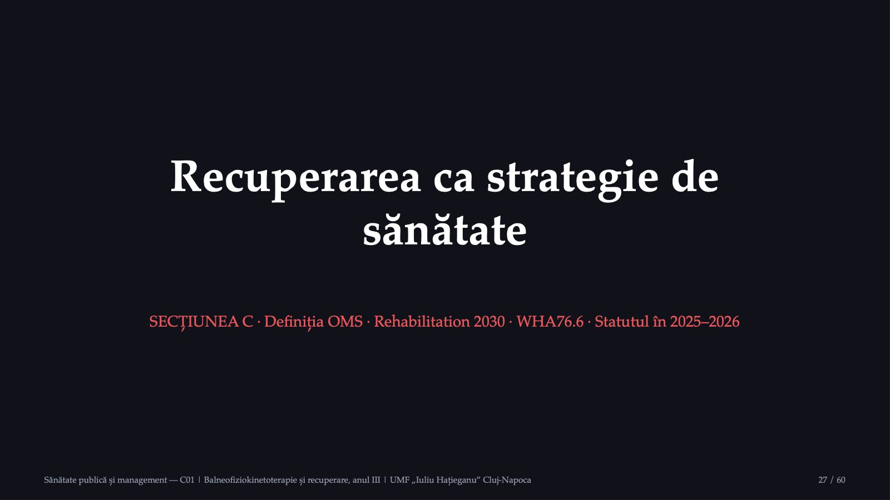
27 / 60OMS tratează recuperarea ca serviciu esențial pentru întreaga populație, nu ca serviciu pentru puțini.
Recuperarea în documentele OMS: o cronologie
![Recuperarea în documentele OMS: o cronologie 1978 Alma-Ata Asistența primară oferă servicii de promovare, preventive, curative și de recuperare 2001 WHA54.21 Aprobarea CIF: limbajul standard al funcționării 2017 Rehabilitation 2030 Apel la acțiune: recuperarea pentru întreaga populație, la toate nivelurile de îngrijire 2023 WHA76.6 Potrivit OMS, prima recunoaștere, în 75 de ani, a recuperării ca prioritate globală Definiția OMS: recuperarea este un set de intervenții concepute pentru a optimiza funcționarea și a reduce dizabilitatea persoanelor cu probleme de sănătate, în interacțiune cu mediul lor. Sănătate publică și management — C01 | Balneofiziokinetoterapie și recuperare, anul III | UMF „Iuliu Hațieganu” Cluj-Napoca 28 / 60](diapozitive/C01/028.jpg) 28 / 60
28 / 60Definiția OMS a recuperării folosește exact termenii modelului CIF: funcționare, dizabilitate, mediu. Recuperarea lucrează cu persoana și cu familia ei, modifică mediul, folosește produse asistive și educă pentru autogestionare.
Rehabilitation 2030: cele zece arii prioritare
![Sănătate publică și management — C01 | Balneofiziokinetoterapie și recuperare, anul III | UMF „Iuliu Hațieganu” Cluj-Napoca 29 / 60 Rehabilitation 2030: cele zece arii prioritare 1. Conducere și sprijin politic 2. Planificare, inclusiv în urgențe 3. Integrare în sectorul sănătății 4. Recuperarea în acoperirea universală 5. Modele de servicii și acces echitabil 6. Forță de muncă multidisciplinară 7. Finanțare prin mecanisme potrivite 8. Informații despre funcționare, cu CIF 9. Cercetare și dovezi solide 10. Rețele și parteneriate Sursa: OMS, Rehabilitation 2030: a call for action, lansat în februarie 2017 Recuperarea: serviciu esențial, necesar pentru acoperirea universală; strategie prioritară a secolului XXI](diapozitive/C01/029.jpg) 29 / 60
29 / 60Inițiativa pornește de la ideea că recuperarea trebuie să fie disponibilă pentru întreaga populație, în toate etapele vieții, integrată la toate nivelurile de îngrijire. Aria a opta, informațiile despre funcționare cu ajutorul CIF, leagă inițiativa de modelul prezentat mai devreme.
Rezoluția WHA76.6: întărirea recuperării
![Rezoluția WHA76.6: întărirea recuperării Ce constată (30 mai 2023) Nevoia crește: boli netransmisibile, îmbătrânire Nevoia este în mare parte nesatisfăcută În multe țări, peste 50% nu primesc serviciile Recuperarea, adesea plătită din buzunar Ce cere statelor Recuperarea în planuri și în pachetele esențiale La toate nivelurile, inclusiv în comunitate Continuitate și trimiteri mai bune Competențe multidisciplinare; date cu CIF Calendarul: raport de referință înainte de sfârșitul anului 2026; ținte și indicatori pentru acoperirea efectivă în 2030; rapoarte de progres în 2026, 2028 și 2030. OMS: prima recunoaștere, în 75 de ani, a recuperării ca prioritate globală. Sănătate publică și management — C01 | Balneofiziokinetoterapie și recuperare, anul III | UMF „Iuliu Hațieganu” Cluj-Napoca 30 / 60](diapozitive/C01/030.jpg) 30 / 60
30 / 60Rezoluția reamintește că acoperirea universală înseamnă acces la servicii de tratament, promovare, prevenție, recuperare și îngrijiri paliative. Pentru fizioterapeut, cererea de a extinde recuperarea la toate nivelurile sistemului, de la asistența primară la cea terțiară, este directă.
Unde suntem: statutul în 2025–2026
![Sănătate publică și management — C01 | Balneofiziokinetoterapie și recuperare, anul III | UMF „Iuliu Hațieganu” Cluj-Napoca 31 / 60 Unde suntem: statutul în 2025–2026 Raportul către Consiliul Executiv (19 decembrie 2025) Nouă indicatori globali: de intrare, de produs, de rezultat Lombalgia cronică nespecifică sau primară: afecțiunea-trasor a acoperirii efective Țintele globale cer mai mult timp; se propune amânarea primului raport global Adunarea Mondială a Sănătății (22 mai 2026) Potrivit OMS, delegații au aprobat prima rezoluție dedicată accidentului vascular cerebral Cere acțiuni pentru prevenție, îngrijirea acută, recuperare și pregătirea sistemelor Două dintre afecțiunile-ancoră au acum un loc explicit în documentele OMS Surse: OMS, documentul EB158/26, 2025; OMS, actualizarea zilnică a Adunării Mondiale a Sănătății, 22.05.2026](diapozitive/C01/031.jpg) 31 / 60
31 / 60Afecțiunea-trasor este afecțiunea după care se judecă dacă nevoia de recuperare a populației este satisfăcută. Faptul că OMS a ales lombalgia cronică arată cât de centrală este această afecțiune pentru recuperare.
Indicatorii stării de sănătate
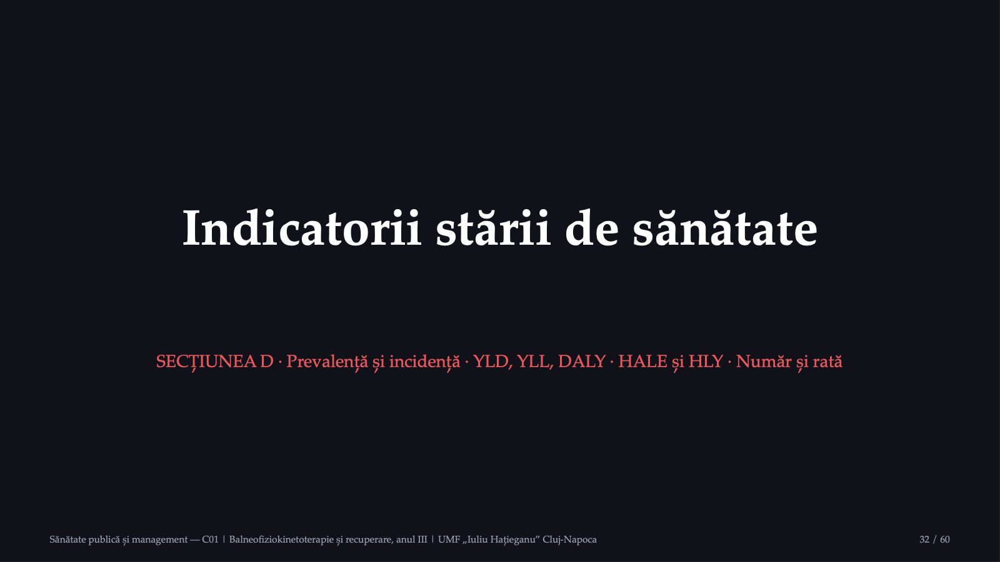
32 / 60Două familii de indicatori: cei care numără persoanele afectate și cei care măsoară sănătatea pierdută.
Cum măsurăm nevoia de recuperare a unei populații?
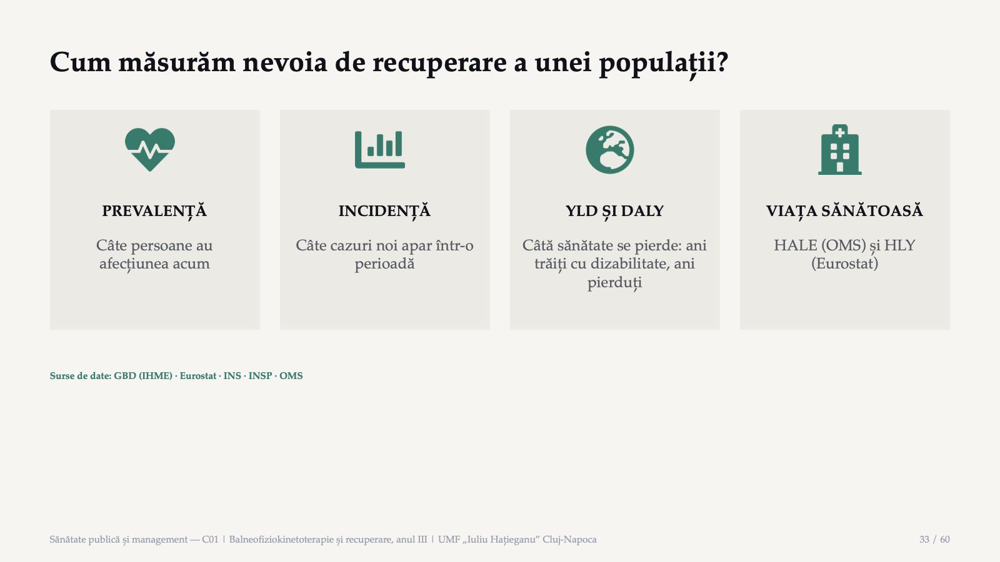
33 / 60Un indicator rezumă un aspect al sănătății unei populații într-o singură cifră, comparabilă în timp și între populații. Primii doi numără persoane; ultimii doi măsoară sănătatea pierdută.
Prevalența și incidența
![Sănătate publică și management — C01 | Balneofiziokinetoterapie și recuperare, anul III | UMF „Iuliu Hațieganu” Cluj-Napoca 34 / 60 Prevalența și incidența PREVALENȚA Câte persoane au afecțiunea acum? persoanele care au afecțiunea ÷ persoanele din populație Cazurile noi și cele existente anterior. Servește la planificarea serviciilor: fizioterapeuți, paturi, ședințe. INCIDENȚA Cât de repede apar cazuri noi? cazurile noi din perioadă ÷ persoanele fără afecțiune la început Numai cazurile noi. Servește la evaluarea prevenției: scad căderile și fracturile noi? Durata contează: prevalența depinde de incidență și de durata bolii. Afecțiunile de lungă durată, ca lombalgia cronică sau urmările unui accident vascular, se adună în populație și cer servicii pe perioade lungi. Surse: CDC, Principles of Epidemiology, lecția 3; OMS, fișa despre afecțiunile musculo-scheletale](diapozitive/C01/034.jpg) 34 / 60
34 / 60Diferența principală se află la numărător: incidența numără numai cazurile noi, prevalența le numără pe toate cele prezente. Pentru bolile cronice de lungă durată, cum este artroza, se măsoară de obicei prevalența.
Exemplu: lombalgia cronică într-o comunitate
![Sănătate publică și management — C01 | Balneofiziokinetoterapie și recuperare, anul III | UMF „Iuliu Hațieganu” Cluj-Napoca 35 / 60 Exemplu: lombalgia cronică într-o comunitate Valori ipotetice. Comunitatea A: 50 000 de adulți; la 1 ianuarie, 4 000 au lombalgie cronică; în cursul anului apar 920 de cazuri noi. Prevalența la 1 ianuarie: 4 000 ÷ 50 000 = 0,08, adică 8%, sau 80 la 1 000 de adulți Persoanele la risc: 50 000 − 4 000 = 46 000 de adulți fără lombalgie cronică Incidența în cursul anului: 920 ÷ 46 000 = 0,02, adică 20 de cazuri noi la 1 000 de adulți fără afecțiune Numitorul greșit: 920 ÷ 50 000 = 0,0184, adică 18,4 la 1 000: cine are deja afecțiunea nu poate deveni caz nou](diapozitive/C01/035.jpg) 35 / 60
35 / 60Calculul arată de ce numitorul incidenței este populația la risc: persoanele care au deja afecțiunea nu mai pot deveni cazuri noi.
Anii trăiți cu dizabilitate, anii pierduți, DALY
![Sănătate publică și management — C01 | Balneofiziokinetoterapie și recuperare, anul III | UMF „Iuliu Hațieganu” Cluj-Napoca 36 / 60 Anii trăiți cu dizabilitate, anii pierduți, DALY YLD numărul persoanelor cu afecțiunea × ponderea de dizabilitate sănătatea pierdută de cei care trăiesc cu afecțiunea; ponderea: de la 0, nicio pierdere, la 1, echivalentul decesului YLL numărul deceselor × speranța de viață standard la vârsta decesului speranța de viață standard: anii pe care i-ar mai fi trăit, în medie, o persoană de aceeași vârstă, după cea mai scăzută mortalitate observată DALY YLL + YLD un DALY: pierderea echivalentului unui an de viață în deplină sănătate De reținut: lombalgia produce foarte puține decese, dar este prima cauză a anilor trăiți cu dizabilitate în lume. Surse: GBD 2021, Diseases and Injuries Collaborators, The Lancet, 2024; OMS, metodele estimărilor globale de sănătate](diapozitive/C01/036.jpg) 36 / 60
36 / 60Formulele sunt în forma cea mai simplă, pentru o singură afecțiune cu o singură stare de gravitate. În studiul GBD, anii trăiți cu dizabilitate se calculează pe fiecare consecință a bolii și se corectează pentru persoanele care au mai multe afecțiuni simultan.
Exemplu: două afecțiuni, două imagini ale poverii
![Sănătate publică și management — C01 | Balneofiziokinetoterapie și recuperare, anul III | UMF „Iuliu Hațieganu” Cluj-Napoca 37 / 60 Exemplu: două afecțiuni, două imagini ale poverii Valori ipotetice. Afecțiunea X: niciun deces; 5 000 de persoane, ponderea 0,1. Afecțiunea Y: 20 de decese la o vârstă cu încă 15 ani de speranță de viață standard; 200 de persoane, ponderea 0,2. AFECȚIUNEA X YLL = 0 YLD = 5 000 × 0,1 = 500 DALY = 500 AFECȚIUNEA Y YLL = 20 × 15 = 300 YLD = 200 × 0,2 = 40 DALY = 340 După decese, Y pare singura problemă; după DALY, povara lui X este mai mare. Pentru X: recuperare și îngrijire de lungă durată; pentru Y: prevenție și tratament la timp.](diapozitive/C01/037.jpg) 37 / 60
37 / 60Pentru afecțiunea X, întreaga povară vine din anii trăiți cu dizabilitate; pentru Y, cea mai mare parte vine din decese premature, 300 din 340.
Speranța de viață sănătoasă: HALE și HLY
![Speranța de viață sănătoasă: HALE și HLY Doi indicatori, două instituții HALE (OMS): anii trăiți în „deplină sănătate”, estimați din anii trăiți cu dizabilitate HLY (Eurostat): anii trăiți fără limitări de activitate, din ancheta EU-SILC Ambii folosesc metoda Sullivan; nu se compară între ei HLY la naștere, 2024 65,0 ani 65,2 ani România (b, e) UE La 65 de ani: 7,0 ani (b, e) față de 10,3 Ruptura de serie din 2024 În 2023, ultimul an dinaintea rupturii din seria României: 59,2 ani în România (e) și 63,1 ani în UE (b, e, p). Valorile din 2024 nu formează o serie cu cele anterioare, deci creșterea aparentă nu este o tendință. Sănătate publică și management — C01 | Balneofiziokinetoterapie și recuperare, anul III | UMF „Iuliu Hațieganu” Cluj-Napoca 38 / 60](diapozitive/C01/038.jpg) 38 / 60
38 / 60Întrebarea anchetei EU-SILC este: de cel puțin șase luni, în ce măsură ați fost limitat, din cauza unei probleme de sănătate, în activitățile pe care oamenii le fac de obicei. Indicatorul măsoară exact tipul de problemă de care se ocupă recuperarea. Marcajul b înseamnă ruptură de serie, iar marcajul e, valoare estimată.
Numărul cazurilor și rata standardizată pe vârstă
![Sănătate publică și management — C01 | Balneofiziokinetoterapie și recuperare, anul III | UMF „Iuliu Hațieganu” Cluj-Napoca 39 / 60 Numărul cazurilor și rata standardizată pe vârstă Numărul arată volumul de muncă; rata brută îl raportează la populație; rata standardizată arată dacă riscul la aceeași vârstă a crescut. FRACTURILE ÎN LUME, 1990–2019 Cazuri noi în 2019: 178 de milioane, +33,4% Anii trăiți cu dizabilitate: 25,8 milioane, +65,3% Rata standardizată a incidenței: scădere cu 9,6% ROMÂNIA, NEVOIA DE RECUPERARE 1990: 10,82 milioane, 46,3% din populație 2021: 9,61 milioane, 50,7% din populație Rata standardizată: de la 42,7% la 38,5% Când populația îmbătrânește, numărul și rata pot evolua în sensuri diferite: se citesc împreună. Surse: GBD 2019 Fracture Collaborators, Lancet Healthy Longevity, 2021; OMS/IHME, WHO Rehabilitation Need Estimator (GBD 2021)](diapozitive/C01/039.jpg) 39 / 60
39 / 60În lume, numărul fracturilor a crescut, deși riscul la aceeași vârstă a scăzut. În România, proporția brută a persoanelor care ar putea beneficia de recuperare a crescut, deși rata standardizată a scăzut: diferența vine din structura pe vârste.
Exemplu: același risc pe vârste, mai multe cazuri
![Sănătate publică și management — C01 | Balneofiziokinetoterapie și recuperare, anul III | UMF „Iuliu Hațieganu” Cluj-Napoca 40 / 60 Exemplu: același risc pe vârste, mai multe cazuri Valori ipotetice. Populația C: 100 000 de locuitori. Prevalența unei afecțiuni musculo-scheletale: 5% sub 65 de ani, 20% la 65 de ani și peste, în ambii ani. ANUL 1: 15 000 DE VÂRSTNICI 85 000 × 0,05 + 15 000 × 0,20 = 4 250 + 3 000 = 7 250 de persoane (7,25%) ANUL 2: 25 000 DE VÂRSTNICI 75 000 × 0,05 + 25 000 × 0,20 = 3 750 + 5 000 = 8 750 de persoane (8,75%) Cu 1 500 de cazuri mai multe, aproximativ +20,7%, deși riscul la fiecare vârstă este același; rata standardizată rămâne neschimbată.](diapozitive/C01/040.jpg) 40 / 60
40 / 60Creșterea se datorează numai îmbătrânirii populației. O rată standardizată pe vârstă, calculată pe aceeași populație standard în ambii ani, ar rămâne neschimbată.
Nevoia de recuperare: lumea și România
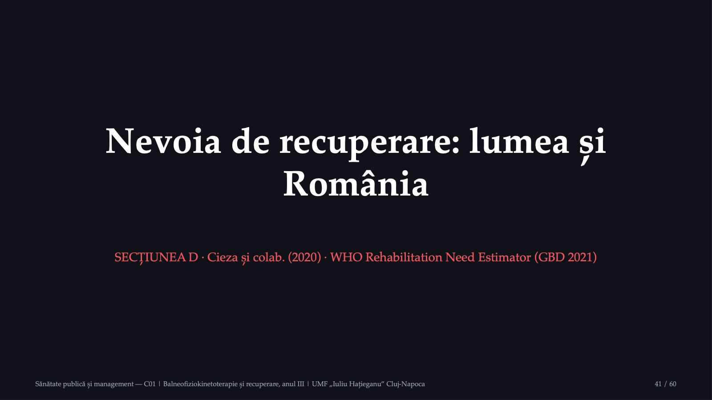
41 / 60Estimările numără persoanele care ar putea beneficia de recuperare, nu pacienții care o primesc.
Nevoia de recuperare în lume: două estimări
![Sănătate publică și management — C01 | Balneofiziokinetoterapie și recuperare, anul III | UMF „Iuliu Hațieganu” Cluj-Napoca 42 / 60 Nevoia de recuperare în lume: două estimări PRIMA ESTIMARE (2020) Cieza și colab., The Lancet; GBD 2019, 25 de afecțiuni 2019: 2,41 miliarde de persoane 310 milioane de ani trăiți cu dizabilitate; +63% față de 1990 Musculo-scheletale: 1,71 miliarde; lombalgia, prima în 160 din 204 țări (după erată) ESTIMAREA ACTUALIZATĂ WHO Rehabilitation Need Estimator; GBD 2021, 27 de afecțiuni 2021: 2,56 miliarde de persoane 342 de milioane de ani trăiți cu dizabilitate Pe baza nouă, 2019: 2,44 miliarde 2,56 miliarde nu continuă seria de 2,41 miliarde: metodele diferă. În aceeași serie: 2,44 miliarde (2019) → 2,56 miliarde (2021). Surse: Cieza și colab., The Lancet, 2020, cu erata din 2021; OMS/IHME, WHO Rehabilitation Need Estimator, extras la 27.09.2026; OMS, EB158/26, 2025 (2,6 miliarde, 340 de milioane)](diapozitive/C01/042.jpg) 42 / 60
42 / 60Estimarea numără persoanele care ar beneficia de recuperare cel puțin o dată în cursul bolii sau al traumatismului lor. Cel puțin o persoană din trei are nevoie de recuperare la un moment dat. Raportul OMS din decembrie 2025 rotunjește aceleași rezultate la 2,6 miliarde de persoane.
9,61 mil.
![România, 2021: cine ar putea beneficia de recuperare Toate afecțiunile PERSOANE 9,61 mil. RATA STANDARDIZATĂ 38,5% Lombalgia PERSOANE 3,08 mil. ANI CU DIZABILITATE ≈381 000 Fracturile PERSOANE 2,48 mil. LOCUL, DUPĂ PERSOANE al doilea Accidentul vascular PERSOANE ≈218 000 ANI CU DIZABILITATE ≈65 700 Sursa: OMS/IHME, WHO Rehabilitation Need Estimator (GBD 2021), România, 2021, ambele sexe, toate vârstele; extras la 27.09.2026 Sănătate publică și management — C01 | Balneofiziokinetoterapie și recuperare, anul III | UMF „Iuliu Hațieganu” Cluj-Napoca 43 / 60](diapozitive/C01/043.jpg) 43 / 60
43 / 60Pentru România, instrumentul OMS estimează 9,61 milioane de persoane, adică 50,7% din populație, și 1,32 milioane de ani trăiți cu dizabilitate. Accidentul vascular cerebral este mai rar, dar produce al cincilea rezultat, între 27 de afecțiuni, după anii trăiți cu dizabilitate. Fractura de șold nu apare separat: instrumentul grupează toate fracturile.
Capcană: „recuperarea este pentru puțini”
![Sănătate publică și management — C01 | Balneofiziokinetoterapie și recuperare, anul III | UMF „Iuliu Hațieganu” Cluj-Napoca 44 / 60 Capcană: „recuperarea este pentru puțini” „Recuperarea este un serviciu de care are nevoie o minoritate: persoanele cu dizabilități grave.” Ce arată datele 2,41 miliarde de persoane în 2019: cel puțin o persoană din trei are nevoie de recuperare la un moment dat 2,56 miliarde în 2021, în estimarea actualizată OMS: recuperarea este un serviciu esențial pentru oricine are o afecțiune care îi limitează funcționarea; afecțiunea cea mai frecventă este lombalgia Nevoia se măsoară în populație, nu se deduce din pacienții care ajung deja la servicii: cine judecă nevoia după sala de tratament îi pierde pe cei care nu ajung acolo. Surse: Cieza și colab., The Lancet, 2020; WHO Rehabilitation Need Estimator; OMS, fișa despre recuperare](diapozitive/C01/044.jpg) 44 / 60
44 / 60Autorii primei estimări pornesc chiar de la această imagine a recuperării ca serviciu specific dizabilității. Datele arată contrariul: afecțiunea cea mai frecventă este o problemă de sănătate obișnuită.
Îmbătrânirea populației României
![Sănătate publică și management — C01 | Balneofiziokinetoterapie și recuperare, anul III | UMF „Iuliu Hațieganu” Cluj-Napoca 45 / 60 Îmbătrânirea populației României INS, POPULAȚIA REZIDENTĂ 1 ianuarie 2016: 17,4% au 65 de ani și peste 1 ianuarie 2026: 20,5% +467 787 de persoane de 65 de ani și peste (+13,6%) populația totală a scăzut cu 719 263 EUROSTAT, COMPARAȚIA CU UE 1 ianuarie 2025, 65+: 20,3% România, 22,0% UE 80+: 4,5% România, 6,2% UE 2005, 65+: 14,2% România, 16,7% UE Proiecția pentru România, 2050: 27,4% (65+), 8,5% (80+) În lume: proporția persoanelor de 60 de ani și peste crește de la 12% la 22% între 2015 și 2050 (OMS). Surse: INS, TEMPO POP105A; Eurostat, demo_pjanind (RO: estimat; UE: estimat și provizoriu); Eurostat, proj_25ndbi, EUROPOP2025, scenariul de bază; OMS, fișa despre îmbătrânire](diapozitive/C01/045.jpg) 45 / 60
45 / 60Numărul persoanelor de 65 de ani și peste a crescut, deși populația totală a scăzut. O proiecție nu este o observație: ea arată ce s-ar întâmpla dacă ipotezele despre natalitate, mortalitate și migrație s-ar confirma.
Povara afecțiunilor-ancoră în lume
![Sănătate publică și management — C01 | Balneofiziokinetoterapie și recuperare, anul III | UMF „Iuliu Hațieganu” Cluj-Napoca 46 / 60 Povara afecțiunilor-ancoră în lume MUSCULO-SCHELETALE ȘI LOMBALGIA 1,71 miliarde de oameni cu afecțiuni musculo-scheletale (OMS) Lombalgia: 619 milioane în 2020; 843 de milioane proiectate în 2050 38,8% din YLD atribuiți factorilor ocupaționali, fumatului, IMC crescut ACCIDENTUL VASCULAR CEREBRAL 93,8 milioane de persoane după AVC în 2021 11,9 milioane de cazuri noi A patra cauză de DALY: 160,5 milioane CĂDERILE 684 000 de decese pe an 37,3 milioane de căderi care cer îngrijiri medicale SUA: 20–30% dintre vârstnicii care cad, leziuni moderate sau grave Surse: OMS, fișele despre afecțiunile musculo-scheletale și despre căderi; GBD 2021 Low Back Pain Collaborators, 2023; GBD 2021 Stroke Risk Factor Collaborators, 2024](diapozitive/C01/046.jpg) 46 / 60
46 / 60Pentru lombalgie, riscul la aceeași vârstă a scăzut ușor între 1990 și 2020, dar numărul persoanelor afectate crește. Accidentul vascular cerebral era, în 2021, a treia cauză de deces în lume. Căderile sunt a doua cauză de deces prin traumatisme neintenționate.
Povara în România: profilul de țară IHME
![Sănătate publică și management — C01 | Balneofiziokinetoterapie și recuperare, anul III | UMF „Iuliu Hațieganu” Cluj-Napoca 47 / 60 Povara în România: profilul de țară IHME Cauza · Locul între cauzele de DALY, 2023 · DALY la 100 000, standardizat, România · Media țărilor cu indice sociodemografic ridicat Accidentul vascular cerebral · al doilea · 2 010,4 · 1 180,8 Lombalgia · al treilea · 1 432,1 · 923,8 Căderile · al șaselea · 808,1 · 963,9 Două dintre afecțiunile-ancoră se află printre primele trei cauze ale poverii bolii în România, iar povara lor standardizată depășește media de comparație. Sursa: IHME, profilul de țară al României, GBD 2023, extras la 27.09.2026; ratele sunt standardizate pe vârstă](diapozitive/C01/047.jpg) 47 / 60
47 / 60Profilul compară ratele standardizate pe vârstă ale României cu media țărilor cu indice sociodemografic ridicat. Pentru căderi, rata României este sub această medie.
Sursele de date și citarea exactă
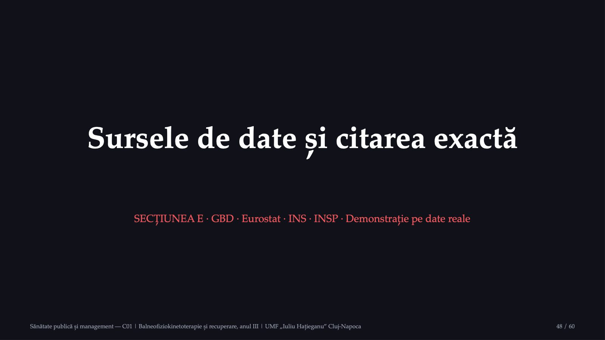
48 / 60Aceeași mărime poate avea valori diferite în surse diferite; sursa se citează împreună cu definiția ei.
Patru surse, patru tipuri de date
![Sănătate publică și management — C01 | Balneofiziokinetoterapie și recuperare, anul III | UMF „Iuliu Hațieganu” Cluj-Napoca 49 / 60 Patru surse, patru tipuri de date Sursa · Ce oferă · De reținut GBD (IHME) · estimări de model pentru toate țările · interval de incertitudine de 95%; rundele nu formează o serie; GBD Compare cere cont Eurostat · statistici oficiale ale UE, seturi cu cod · marcaje: b ruptură de serie, e estimat, p provizoriu; EHIS, ultimul val publicat 2019 INS · statistica oficială a României, TEMPO Online · matrice cu cod, de exemplu POP105A; populația rezidentă INSP · centre naționale și regionale de sănătate publică · supravegherea bolilor netransmisibile, statistica în sănătate publică Aceeași afecțiune: EHIS 2019, lombalgie declarată: 7,6% în România, 23,8% în UE; GBD: 16,3% din populație. Cifrele măsoară lucruri diferite. Surse: GBD 2021; Eurostat, hlth_hlye și hlth_ehis_cd1e; INS, TEMPO; INSP](diapozitive/C01/049.jpg) 49 / 60
49 / 60Ancheta EHIS numără ce declară respondenții; studiul GBD definește lombalgia ca durere între marginea coastelor a douăsprezecea și pliurile fesiere, care a durat cel puțin o zi. Cele două cifre nu se scad una din cealaltă.
Citarea exactă: instituție, an, măsură, cod
![Sănătate publică și management — C01 | Balneofiziokinetoterapie și recuperare, anul III | UMF „Iuliu Hațieganu” Cluj-Napoca 50 / 60 Citarea exactă: instituție, an, măsură, cod O valoare Eurostat 65,0 ani de viață sănătoasă la naștere, România: Eurostat, setul hlth_hlye, indicatorul HLY_Y0, ambele sexe, anul 2024, marcaje „b” și „e”, extras la 27.09.2026 O valoare GBD WHO Rehabilitation Need Estimator (GBD 2021), lombalgie, prevalență, număr, toate vârstele, ambele sexe, România, 2021 Fișa disciplinei: orice valoare numerică din fișe este însoțită de sursa exactă.](diapozitive/C01/050.jpg) 50 / 60
50 / 60O citare completă permite oricui să regăsească valoarea. La valorile GBD se adaugă runda, cauza, măsura, metrica, vârsta, sexul, locația și anul.
Demonstrație: povara afecțiunilor musculo-scheletale în România
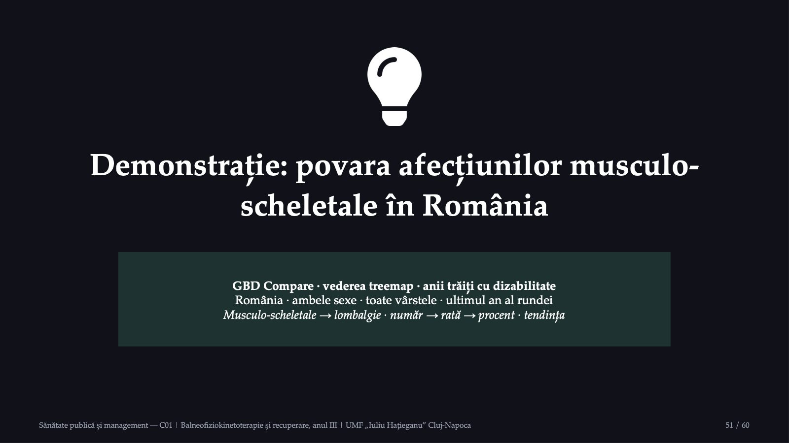
51 / 60Pentru fiecare valoare arătată, citarea completă cuprinde instrumentul, runda GBD, măsura, metrica, cauza, vârsta, sexul, locația, anul și intervalul de incertitudine. Instrumentul WHO Rehabilitation Need Estimator este public și poate înlocui GBD Compare.
Ce nu putem afirma pe baza acestor date
![Sănătate publică și management — C01 | Balneofiziokinetoterapie și recuperare, anul III | UMF „Iuliu Hațieganu” Cluj-Napoca 52 / 60 Ce nu putem afirma pe baza acestor date Câte persoane din România primesc efectiv recuperare și câte nu o primesc: nu a fost găsită o statistică oficială publicată O valoare pentru fractura de șold: estimările OMS grupează toate fracturile Tendința anilor de viață sănătoasă: ruptura de serie din 2024 o întrerupe Evoluția morbidității declarate după pandemie: valul EHIS din 2025 nu era publicat O singură cifră a lombalgiei în lume: 619, 594 sau 568 de milioane, după produs, rundă și an Valorile GBD Compare pentru România: instrumentul cere autentificare Rezultatul discuțiilor despre recuperare din Adunarea Mondială a Sănătății din mai 2026](diapozitive/C01/052.jpg) 52 / 60
52 / 60Fiecare limită are o cauză precisă: date nepublicate, grupări ale estimărilor, rupturi de serie sau diferențe între produse. O cifră lipsă, adusă cu sursa ei primară, completează aceste note.
Recapitulare: harta conceptuală a cursului
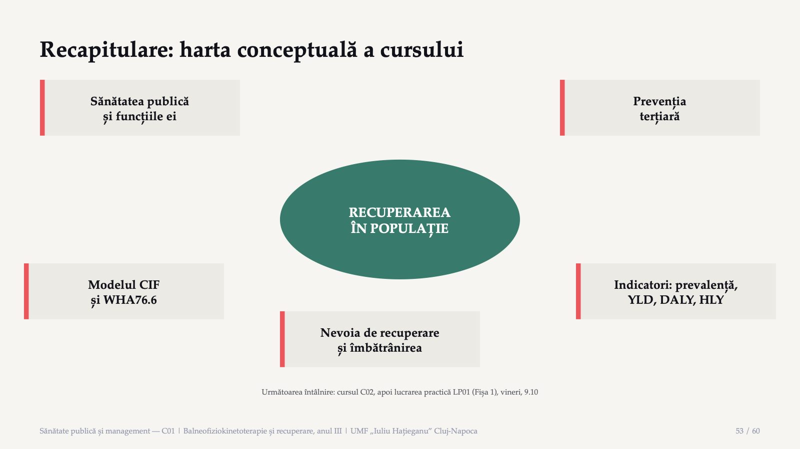
53 / 60Cele cinci concepte se leagă de recuperarea privită la nivelul populației: definiția, prevenția, modelul funcționării, indicatorii și nevoia estimată.
Verificarea finală · întrebarea 1 din 5
![Verificarea finală · întrebarea 1 din 5 Potrivit definiției de lucru din raportul comitetului condus de Acheson, prin ce anume previne sănătatea publică boala, prelungește viața și promovează sănătatea? Sănătate publică și management — C01 | Balneofiziokinetoterapie și recuperare, anul III | UMF „Iuliu Hațieganu” Cluj-Napoca 54 / 60 A Prin îngrijirea medicală a fiecărui pacient B Prin eforturile organizate ale societății C Prin igiena sanitară și controlul epidemiilor D Prin activitatea medicilor de familie E Prin plata serviciilor din asigurări Vot pe telefon · codul de acces este afișat de cadrul didactic](diapozitive/C01/054.jpg) 54 / 60
54 / 60Votați individual, fără a discuta. După vot, discutăm variantele alese și paragraful din note care decide întrebarea.
Verificarea finală · întrebarea 2 din 5
![Verificarea finală · întrebarea 2 din 5 O persoană are lombalgie cronică de doi ani și urmează un program de exerciții și de educație pentru autogestionarea durerii. Potrivit glosarului OMS din 2021, ce ilustrează acest program? Sănătate publică și management — C01 | Balneofiziokinetoterapie și recuperare, anul III | UMF „Iuliu Hațieganu” Cluj-Napoca 55 / 60 A Prevenția primară B Prevenția secundară C Depistarea precoce prin screening D Reducerea factorilor de risc comuni E Prevenția terțiară Vot pe telefon · codul de acces este afișat de cadrul didactic](diapozitive/C01/055.jpg) 55 / 60
55 / 60Votați individual, fără a discuta. După vot, discutăm variantele alese și paragraful din note care decide întrebarea.
Verificarea finală · întrebarea 3 din 5
![Verificarea finală · întrebarea 3 din 5 Un pacient după fractură de șold poate urca zece trepte în sala de recuperare, dar blocul în care locuiește este fără lift, așa că a încetat să mai iasă din casă. În modelul CIF, lipsa liftului este: Sănătate publică și management — C01 | Balneofiziokinetoterapie și recuperare, anul III | UMF „Iuliu Hațieganu” Cluj-Napoca 56 / 60 A o deficiență a structurilor corpului pacientului B o limitare de activitate C un factor de mediu, cu rol de barieră D un factor personal al pacientului E o restricție de participare Vot pe telefon · codul de acces este afișat de cadrul didactic](diapozitive/C01/056.jpg) 56 / 60
56 / 60Votați individual, fără a discuta. După vot, discutăm variantele alese și paragraful din note care decide întrebarea.
Verificarea finală · întrebarea 4 din 5
![Verificarea finală · întrebarea 4 din 5 Un serviciu de recuperare vrea să estimeze de câți fizioterapeuți va avea nevoie pentru persoanele care trăiesc în prezent cu lombalgie cronică în zona pe care o deservește. Ce indicator răspunde direct la această întrebare? Sănătate publică și management — C01 | Balneofiziokinetoterapie și recuperare, anul III | UMF „Iuliu Hațieganu” Cluj-Napoca 57 / 60 A Prevalența lombalgiei cronice B Incidența lombalgiei cronice C Anii de viață pierduți prin deces D Speranța de viață la naștere E Rata mortalității generale Vot pe telefon · codul de acces este afișat de cadrul didactic](diapozitive/C01/057.jpg) 57 / 60
57 / 60Votați individual, fără a discuta. După vot, discutăm variantele alese și paragraful din note care decide întrebarea.
Verificarea finală · întrebarea 5 din 5
![Verificarea finală · întrebarea 5 din 5 Valori ipotetice. Într-un an, o afecțiune produce 20 de decese la o vârstă la care speranța de viață standard este de încă 15 ani, iar 200 de persoane trăiesc cu ea, cu o pondere de dizabilitate de 0,2. Câți ani de viață ajustați pentru dizabilitate (DALY) produce afecțiunea? Sănătate publică și management — C01 | Balneofiziokinetoterapie și recuperare, anul III | UMF „Iuliu Hațieganu” Cluj-Napoca 58 / 60 A 40 B 300 C 60 D 340 E 3 000 Vot pe telefon · codul de acces este afișat de cadrul didactic](diapozitive/C01/058.jpg) 58 / 60
58 / 60Votați individual, fără a discuta. După vot, discutăm variantele alese și paragraful din note care decide întrebarea.
Verificarea finală: răspunsurile
![Sănătate publică și management — C01 | Balneofiziokinetoterapie și recuperare, anul III | UMF „Iuliu Hațieganu” Cluj-Napoca 59 / 60 Verificarea finală: răspunsurile 1. Răspunsul B: Prin eforturile organizate ale societății Definiția de lucru din raportul din 1988 este: știința și arta de a preveni boala, de a prelungi viața și de a promova sănătatea prin eforturile organizate ale societății. 2. Răspunsul E: Prevenția terțiară Glosarul OMS din 2021 include în prevenția terțiară managementul bolii și recuperarea, de exemplu educația pacientului și fizioterapia, pentru o boală deja instalată. 3. Răspunsul C: un factor de mediu, cu rol de barieră Factorii de mediu cuprind mediul fizic, inclusiv caracteristicile arhitecturale; aici mediul acționează ca barieră, pentru că performanța pacientului acasă este mai slabă decât capacitatea lui din sală. 4. Răspunsul A: Prevalența lombalgiei cronice Prevalența arată câte persoane au afecțiunea acum; de ea depind numărul de fizioterapeuți, de paturi și de ședințe de care are nevoie populația. 5. Răspunsul D: 340 Anii de viață pierduți sunt 20 × 15 = 300, anii trăiți cu dizabilitate sunt 200 × 0,2 = 40, iar DALY = 300 + 40 = 340.](diapozitive/C01/059.jpg) 59 / 60
59 / 60Explicațiile complete, pentru fiecare variantă, se află în exercițiile de autoevaluare ale cursului.
Bibliografie și pașii următori
![Bibliografie și pașii următori Până la lucrarea practică 1. Recitiți secțiunile 1.5 (CIF) și 1.7 (indicatorii) 2. Aduceți afecțiunea-ancoră aleasă și un telefon sau un laptop 3. Pentru GBD Compare: contul IHME se creează înaintea lucrării; fără cont, instrumentul OMS Bibliografie 1. Suportul de curs electronic actualizat, C01 2. OMS: CIF, ghidul introductiv 3. Rezoluția WHA76.6, 2023 4. Cieza și colab., The Lancet, 2020 5. WHO Rehabilitation Need Estimator 6. Eurostat, hlth_hlye 7. Legea nr. 229/2016 8. Legea nr. 95/2006 Surse online: who.int · vizhub.healthdata.org · ec.europa.eu/eurostat · insse.ro Materialele cursului sunt pe site-ul cursului. Fișele și erorile semnalate: adrian.pana@umfcluj.ro Sănătate publică și management — C01 | Balneofiziokinetoterapie și recuperare, anul III | UMF „Iuliu Hațieganu” Cluj-Napoca 60 / 60](diapozitive/C01/060.jpg) 60 / 60
60 / 60Bibliografia obligatorie completă este în fișa disciplinei; lista de alături cuprinde sursele folosite la acest curs, citate în note cu data extragerii.
Săgeți sau spațiu: navigare · O: vedere de ansamblu · N: notele prezentatorului · F: ecran complet · Esc: închidere